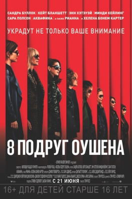
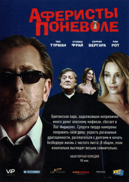
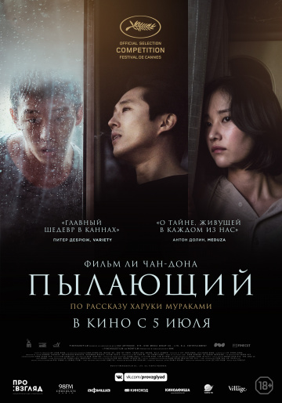
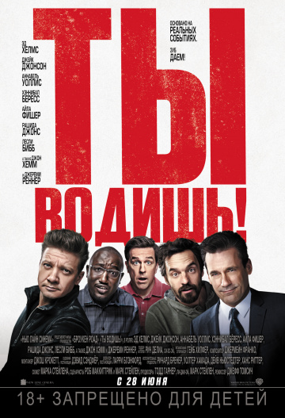
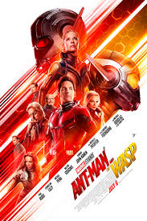
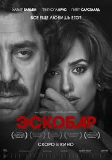
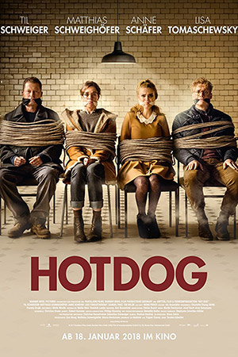

Жанры: Комедия, Экшн
Возрастное ограничение: Зрителям, достигшим возраста 16 лет
Режиссер: Гэри Росс
Актеры:Мэтт Дэймон, Дакота Фаннинг, Энн Хэтэуэй, Хелена Бонем Картер, Кейт Бланшетт
В центре сюжета фильма находятся восемь женщин, планирующих совершить «ограбление века».
Дэбби Оушен, сестра авантюриста
Дэнни Оушена, вместе со своей давней сообщницей Лу Миллер собирает команду уникальных
специалистов: ювелир Амита, карманница Констанс, скупщица краденого Тэмми, хакер
Девятка и модельер Роуз. Целью восьми подруг Оушена является бриллиантовое ожерелье стоимостью
150 миллионов долларов,
которое будет на шее знаменитой актрисы Дафны Клюгер во время одного светского мероприятия.
План у героинь фильма идеальный, а что будет с его реализацией?

Жанры: Комедия
Возрастное ограничение: Зрителям, достигшим возраста 18 лет
РежиссерДжеймс Окли
АктерыСофия Вергара, Тим Рот, Элис Ив, Ума Турман, Паркер Поузи, еще
Авантюрная комедия о парочке аферистов Питере и Гарриет, которые, задолжав деньги крупному гангстеру, бегут из Великобритании в Лос-Анджелес. Преследуемые мафией,
беглецы планируют кражу драгоценностей, заручившись поддержкой экс-жены Питера и ее нынешнего мужа.

Жанры: Комедия
Возрастное ограничение: Зрителям, достигшим возраста 16 лет
Режиссер: Билл Холдермэн
Актеры: Алисия Сильверстоун, Джейн Фонда, Мэри Стинберген
Четыре давние подруги из Калифорнии, перешагнувшие порог шестидесятилетия, состоят в одном книжном клубе.
Когда в руки начитанных и почтенных дам попадает скандальный эротический бестселлер «50 оттенков серого»,
в их жизни наступают революционные перемены.
Оказывается, вдохновение можно черпать в самых неожиданных местах.

Жанры: Драма, Триллер, Детектив
Возрастное ограничение: Зрителям, достигшим возраста 18 лет
Режиссер: Ли Чхан-дон
Актеры: Ю А-ин, Стивен Ян, Чон Джон-со
Молодой парень по имени Чон-су, работающий в кинопрокатной компании, влюблен в свою подругу Хэ-ми,
с которой он вместе учился. Однажды Хэ-ми уезжает в Африку, чтобы найти себя, а когда возвращается из нее,
знакомит Чон-су со своим новым другом Беном. Поначалу молодые люди просто хорошо проводят время вместе,
но однажды Бен рассказывает о своем необычном хобби – он любит поджигать чужие заброшенные сараи.
С этого момента жизнь героев меняется невероятным образом.

Жанры: Комедия
Возрастное ограничение: Зрителям, достигшим возраста 16 лет
Режиссер: Джефф Томсич
АктерыДжереми Реннер, Эд Хелмс, Хэннибал Бёресс, Трэйси Морган, Айла Фишер, еще
Группа бывших одноклассников на протяжении тридцати лет, каждый май, играют в детские салочки.
Они бегают друг за другом по всей стране, устраивают засады, врываются в чужие дома и совершают немыслимые безумства,
лишь бы хоть раз победить абсолютного чемпиона Джерри.

Жанры: Боевик, Триллер
Возрастное ограничение: Зрителям, достигшим возраста 18 лет
Режиссер: Стефано Соллима
Актеры: Изабела Монер, Кристофер Хейердал, Джош Бролин, Мэттью Модайн, Бенисио Дель Торо
Мексиканские наркокартели начинают переправлять в США не только наркотики и нелегалов, но еще и террористов. Это естественно не нравится правительству США и
поэтому оно решает пойти на кардинальные меры. В итоге федеральный агент Мэтт Грейвер вновь обращается за помощью к мексиканцу Алехандро Гиллике. Вместе они собираются спровоцировать
войну между конкурирующими картелями и для этого похищают дочь одного из их лидеров.
А когда ситуация обостряется агент Грейвер приказывает Алехандро убить ребенка...

Жанры: Приключения, Фантастика, Экшн
Возрастное ограничение: Зрителям, достигшим возраста 12 лет
Режиссер: Пейтон Рид
Актеры: Пол Радд, Эванджелин Лилли, Майкл Дуглас, Майкл Пенья
В центре сюжета фильма находится Скотт Лэнг, который в костюме Человека-Муравья стал новым Мстителем,
но при этом решил вернуться в свой родной Сан-Франциско, чтобы попытаться совместить обязанности супергероя
и отца. Однако в планы Лэнга вмешивается доктор Хэнк Пим, который призывает его присоединиться к новой ответственной
миссии по защите нашего мира от таинственного и могущественного злодея.
На этот раз у Человека-Муравья появится напарница по прозвищу Оса.

Жанры: Драма, Биография
Возрастное ограничение: Зрителям, достигшим возраста 18 лет
Режиссер:Фернандо Леон Де Араноа
АктерыПенелопа Крус, Хавьер Бардем, Питер Сарсгаард, David Ojalvo, Дэвид Валенсиа
Фильм повествует историю жизни знаменитого наркобарона Пабло Эскобара. В самом начале он был щедрым благотворителем и строил дома для бедных жителей
Колумбии на деньги, полученные от продажи наркотиков в США. Именно тогда в него влюбилась известная журналистка Вирхиния Вальехо,
но вскоре ей пришлось столкнуться со значительными изменениями в мировоззрении своего возлюбленного.
Пожелав, чтобы его уважали, Эскобар развязал кровавую войну и превратился в безжалостного убийцу.

Жанры: Комедия, Боевик
Возрастное ограничение: Зрителям, достигшим возраста 16 лет
Режиссер: Торстен Кюнстлер
Актеры:Тиль Швайгер, Маттиас Швайгхёфер, Хайно Ферх, Лиза Томашевски
В центре сюжета фильма находятся два блюстителя порядка – Тео и Люк. Если первый – это самый настоящий
ботан со всеми вытекающими из этого последствиями, то второй – грубиян, привыкший решать все свои вопросы
кулаками. Именно таким непохожим друг на друга людям предстоит объединиться в команду,
чтобы спасти похищенную дочь посла одной из восточно-европейских стран.